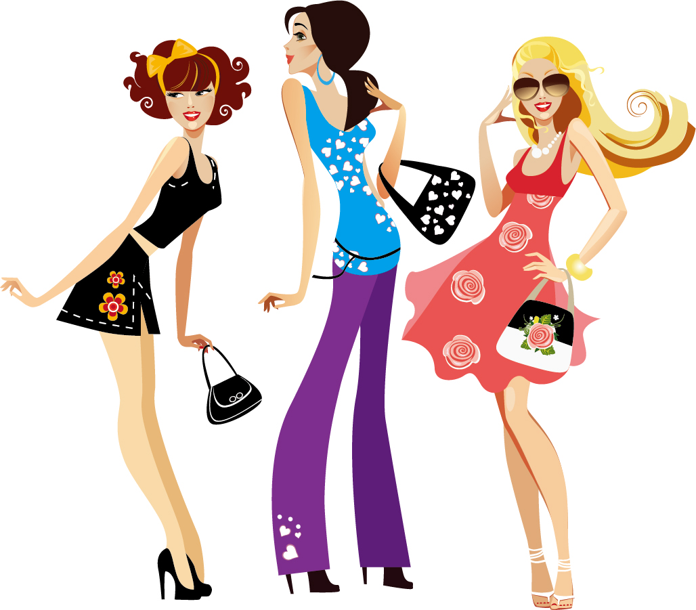
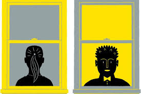
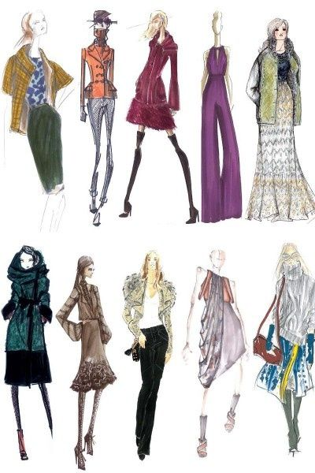
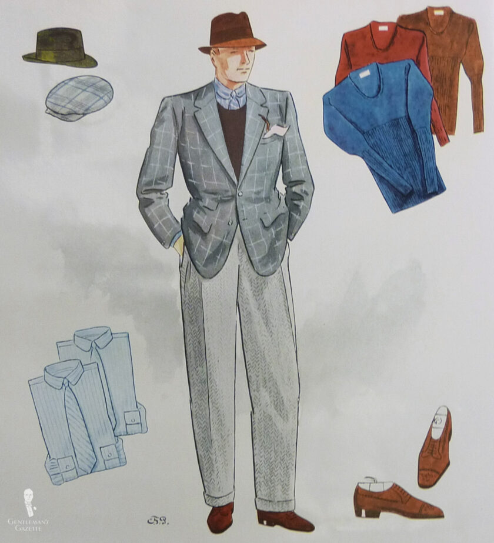
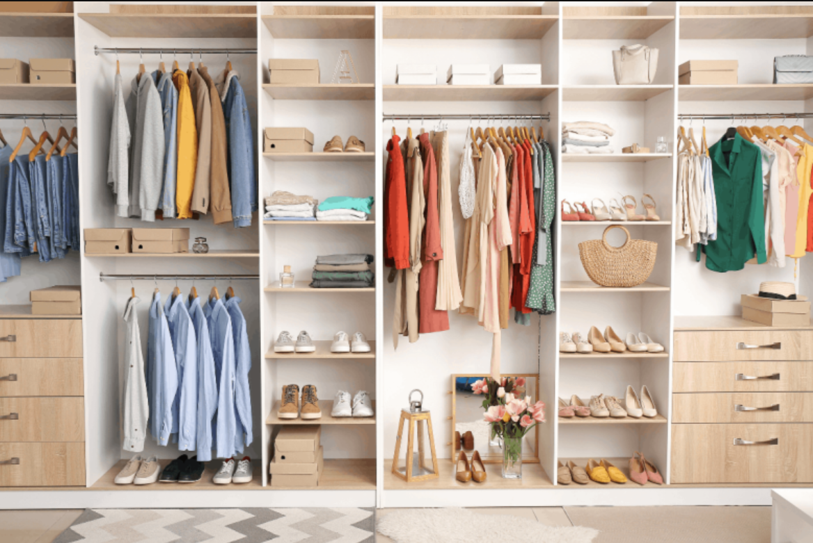

Discuss how clothing choices can reflect different personality traits.
|  |
ConfidenceIf you're a confident individual, you might gravitate towards bold and vibrant clothing choices. These can signal your self-assuredness to others and convey your outgoing nature. Bright colors, patterns, and attention-grabbing accessories can all be indicators of a confident personality. |
Introversion vs. ExtroversionIntroverts often prefer clothing that is comfortable and functional. Their style might lean towards more subdued colors and simpler designs. Extroverts, on the other hand, might embrace a wider range of colors and styles, enjoying the attention they receive from their clothing choices. Dark colors are often associated with formality, mystery, and power, while bright colors are associated with happiness, excitement, and youthfulness. |
 |
|  |
CreativityCreative individuals tend to experiment with their clothing, combining unique pieces and styles. They may enjoy DIY fashion projects, mixing and matching items to create outfits that reflect their artistic sensibilities. The adornment of multiple pieces of jewelry often comes across as creative and expressive as well. Unconventional fashion choices can be a clear indicator of a creative personality. |
Attention to DetailPeople with a keen eye for detail often invest time in selecting clothing that matches perfectly and paying attention to the quality of materials. Neatly coordinated outfits and a meticulous approach to dressing can suggest a detail-oriented personality. Additionally, accessories like watches come across as organized and detail-oriented. |
 |
|  |
MinimalismMinimalists prefer simplicity and function in their clothing choices. A minimalist wardrobe typically consists of a few high-quality pieces that can be mixed and matched effortlessly. This style choice can reflect a practical and organized personality. |